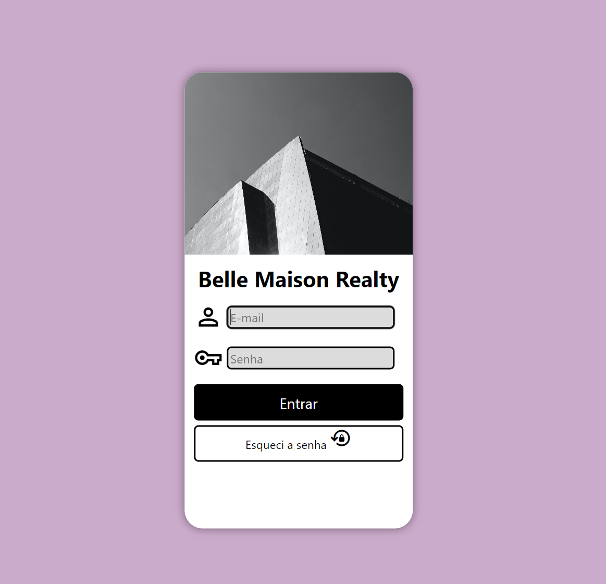
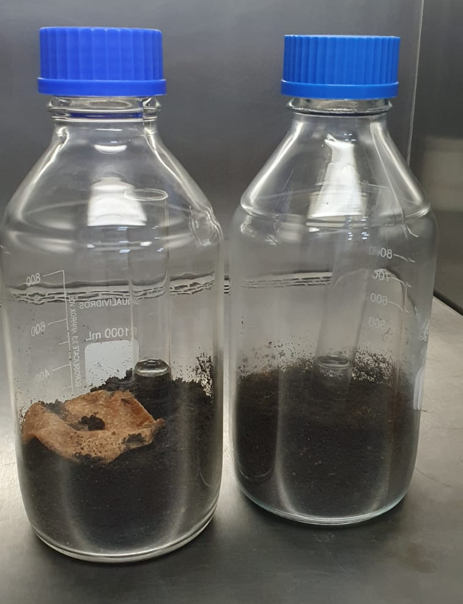
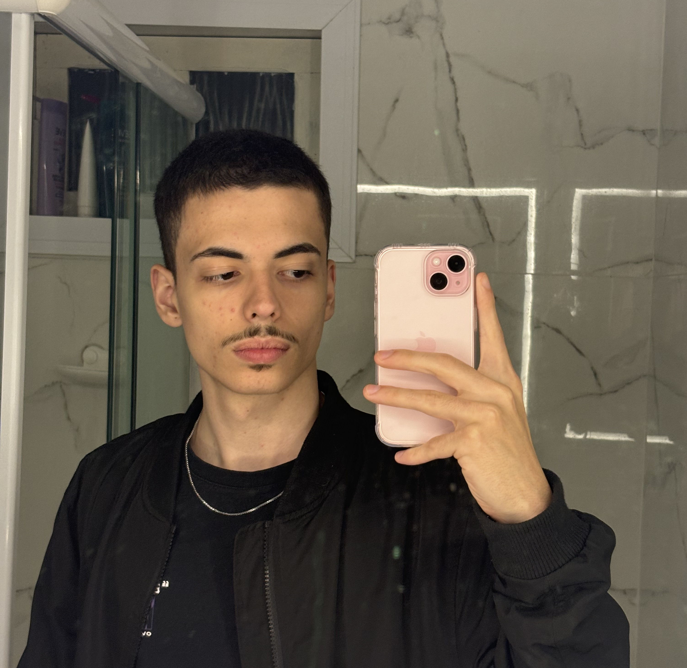

Gabriel Machado
Atual Tecnico Quimico e
Estudante de Engenharia de Software
Atual Tecnico Quimico e
Estudante de Engenharia de Software
Ao terminar o ensino medio tive tempo para me dedicar ao estudos realcionados a programação dentre estes conhecimentos o desenvolvimento web foi um dos principais conteudos abordados assim projetos como o de login situado a esquerda, tecnicas como media queries, responsividade, interatividade por JavaScript e otimização do site. Voltado ao backend desenvolvi atraves da linguem python, um manipulador de arquivo xlsx para cadastro de produtos e clientes.
Durante curso foram desenvolvidos diversas simulações em arduinos, utilizando plataformas como tinkercad e arduinos físicos, como semáforos, manilpulação de motores cc/dc, entre outros, visando o conhecimento dos componentes e a logica por trás de itens basicos do cotidiano.
No instituto federal de Santa Catarina realizei projetos como por exemplo a sintese de um biocurativo a base de kombucha onde o projeto buscava criar um polimero curativo que não impactava o meio ambiente de forma negativa. O objetivo principal do projeto obteve um resultado satisfatorio e positivo. Comprovando sua sustentabilidade em meio a ambientes naturais graças a testes em campo e em ambientes controlados verificando o aumento de gases provenientes de microrganismos correlacionando ao aumento dos mesmos, logo utilizado como fonte de energia em forma de glicose.
Nascido no Paraná em janeiro de 2004, mudei-me para Santa Catarina em 2008 e estabeleci-me em Jaraguá do Sul, onde resido e estudo desde então. Minha jornada acadêmica teve um marco significativo no Instituto Federal de Santa Catarina (IFSC), onde aprimorei minhas habilidades no curso técnico em Química. Essa formação me abriu portas para o meu emprego atual, atuando na área química onde produzo cosmeticos para uso pessoal em geral. No entanto, minha verdadeira paixão e escolha de carreira estão na área de tecnologia, onde descobri um interesse genuíno e uma profunda admiração. Agora, como estudante de Engenharia de Software na Universidade Católica de Santa Catarina, estou dedicando-me ao desenvolvimento e aprimoramento das minhas habilidades nesse campo promissor com o sonho de obter a liberdade geografica.
